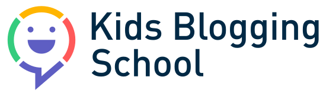
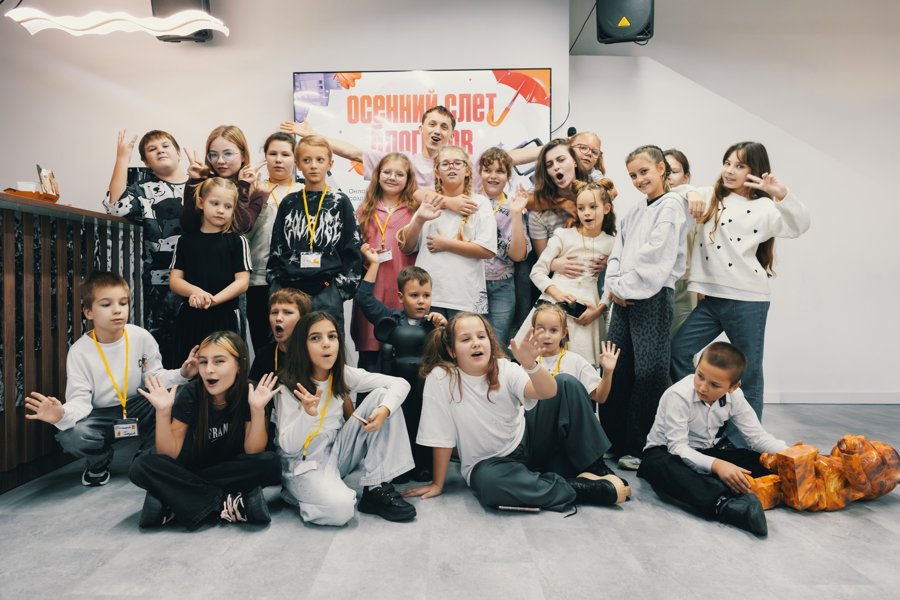

структурной перестройки рабочих мест
Доля сегодняшних рабочих мест, которую затронет создание и вытеснение ролей к 2030 году.
WEF, 2025
Дети и цифровой мирНавигатор для родителей и детей 7–14 лет
Искусственный интеллект (AI) становится частью работы и творчества. Осваивая его сегодня, ребёнок учится воплощать свои идеи и легче адаптироваться к новым задачам в будущем.
Исследования и понятные примеры для родителей.
Что меняется к 2030 году
Прогноз World Economic Forum до 2030 года показывает, почему важно учиться новому.
Источник: Future of Jobs Report 2025. Это прогноз на 2025–2030 годы, а не уже произошедшие изменения.
Доля сегодняшних рабочих мест, которую затронет создание и вытеснение ролей к 2030 году.
WEF, 2025Работодатели ожидают, что значительная часть необходимых навыков трансформируется или устареет.
WEF, 2025AI и технологии обработки информации станут одним из главных факторов трансформации бизнеса.
WEF, 2025Умение учиться и работать с AI поможет ребёнку осваивать новые инструменты и роли.
AI и будущее
По оценке ILO, около четверти рабочих мест в мире потенциально подвержены влиянию генеративного AI. Трансформация работы вероятнее полной замены человека.
Через небольшие творческие проекты ребёнок учится ставить задачи нейросети, проверять ответы и дорабатывать результат. Этот опыт пригодится при освоении новых технологий.
Исследование ILO, 2025Навыки будущего
Технологии меняются, а эти навыки помогают ими пользоваться. Выберите навык, чтобы увидеть пример.
01 / МЫСЛИТЬ
Сравнивать источники, замечать связи и искать несколько решений.
Ребёнок сравнивает источники для ролика, выбирает аргументы и объясняет, почему доверяет именно им.
Технологии + человеческие навыки. WEF отмечает рост значимости AI и технологической грамотности наряду с креативным мышлением и умением учиться.
WEF, 2025AI-грамотность
Важно учиться не только получать ответ нейросети, но и осмысленно использовать его для своей идеи.
AI может ошибаться. Уверенный ответ нужно проверять, а личные данные — беречь.
Попросить идеи для сценария или визуала, сравнить варианты и выбрать подходящий.
Доработать результат, учесть авторские права и объяснить, где помог AI.
Рамка UNESCO: 12 компетенций, 4 измерения и 3 уровня освоения AI — от понимания к созданию.
UNESCO, 2024Новое направление в Kids Blogging School
Kids Blogging School помогает детям находить свой стиль и увереннее проявляться в цифровом мире.
Мы давно обучаем детей блогингу: учим придумывать, снимать, монтировать и рассказывать свои истории.
К работе с контентом мы добавляем AI-инструменты, чтобы дети осваивали современные технологии и использовали их для собственных идей.

Перейдите в удобный мессенджер и отправьте кодовое слово:
Менеджер свяжется с вами, расскажет подробнее о программе и подберёт удобные для вас условия.
Источники
Данные и прогнозы исследований. Примеры детских проектов — наша редакционная интерпретация.
Рынок труда, быстрорастущие навыки, влияние технологий и прогноз до 2030 года.
Воздействие GenAI на задачи и профессии. Главный акцент: трансформация работы вероятнее полного замещения.
12 компетенций, четыре измерения и три уровня развития AI-грамотности.